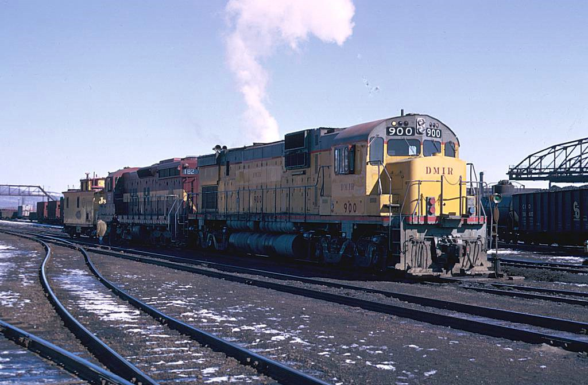

Santa Fe 3480, nicknamed “Pegasus,” is a stainless-steel baggage-dormitory car originally built for the Atchison, Topeka & Santa Fe Railway (AT&SF) by the Budd Company. Designed for long-distance passenger service, the car provided both baggage space and sleeping quarters for train crew members. After retirement from mainline service, 3480 was preserved and is now part of the collection at the Arkansas Railroad Museum in Pine Bluff, Arkansas. Its streamlined stainless-steel construction is a classic example of mid-20th-century Santa Fe passenger equipment

Cotton Belt Steam Locomotive #819
Cotton Belt (St. Louis Southwestern Railway) Locomotive #819 is a 4-8-4 “Northern”-type steam engine built in December 1942 at the Pine Bluff, Arkansas locomotive shops. It entered service on February 8, 1943, and was the last steam locomotive ever built in Arkansas. After retirement in 1955, #819 was restored to operation in the 1980s and later returned to static display. Today, it is preserved at the Arkansas Railroad Museum in Pine Bluff, where it serves as the museum’s signature historic locomotive.

Union Pacific 2907 is a first-generation Alco C-630 diesel-electric locomotive, built in October 1966 by the American Locomotive Company (Alco). It's powered by a 251-series V16 engine, delivering 3,000 horsepower. This unit is on loan to the Arkansas Railroad Museum in Pine Bluff, where it is one of the few surviving high-horsepower C-630s — in fact, it's the only remaining 3,000-hp C-630 out of the ten originally purchased by Union Pacific.
